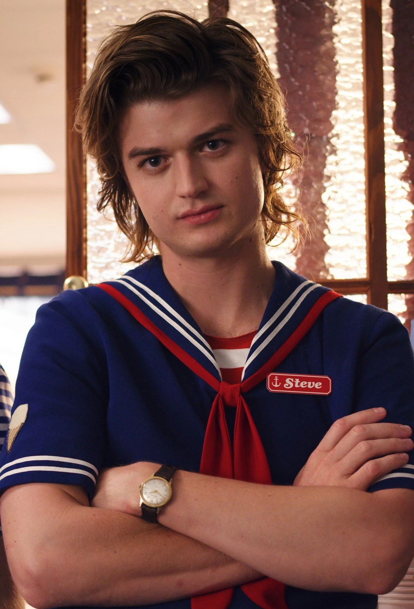

Steve Harrington is a character from the Netflix television show Stranger Things, portrayed by Joe Keery. While starting out as a typical unlikable jock, Steve has grown into a more protecting and caring character as the show has progressed, a development that has received widespread acclaim from critics and fans alike and has led to him becoming one of the show’s most beloved and enduring characters, and is regarded as the show's breakout character.[1] Initially a part of the recurring cast, Keery was promoted to the main cast in the second season. Steve is a side antagonist turned protagonist at the end of season 1, and one of the main protagonists of season 2, season 3, and season 4.
Steve is initially portrayed as a stereotypical 1980s popular jock, antagonistic and unlikable. Steve had been dating Nancy Wheeler but after he harasses Jonathan Byers by breaking his camera, Nancy seems to become close to Jonathan. Steve accosts Jonathan, but Jonathan beats him in a fight and Steve sees the error of his ways and ignores his former "friends". Traveling to the Byers' home to apologize, he becomes involved in Nancy and Jonathan's fight against the Demogorgon, which they defeat. At the conclusion of the season, Nancy buys Jonathan a new camera and Steve continues his relationship with Nancy.
Steve's relationship with Nancy is stressed, and he breaks up with her after she will not say she loves him. He calls her out after her drunken tirade at a party where she calls their relationship fake. Steve also finds himself at odds with Billy Hargrove, a new student at the school who seeks to become its tough guy. Steve becomes involved with Mike Wheeler and his friends after Dustin asks him to help find his "pet" D'Artagnan, unaware it is a Demodog. Steve and Dustin bond over how to talk to girls, and soon Steve also takes Mike, Lucas, and Max (Billy's step-sister) under his wing. Steve protects the children as Demodogs start ravaging across Hawkins, giving time for Eleven and Jim Hopper to close the gate to the Upside Down, and for Will Byers to have the Mind Flayer exorcised from his body. He also defends the kids against Billy, and is knocked unconscious before Max is able to disable her brother.
Now graduated from high school, Steve works at the Scoops Ahoy! ice cream parlor at Starcourt Mall with Robin Buckley (Maya Hawke), a former classmate who teases him frequently. Dustin, having returned from science camp and set up a ham radio tower to talk with his new girlfriend Suzie in Utah, gets Steve's help to translate a Russian radio message he overheard. Robin helps with the translation, indicating a site at the mall, and Lucas' sister Erica (Priah Ferguson) is recruited to sneak into the site in exchange for free ice cream. Steve, Robin, Dustin, and Erica find a secret Russian base under the mall that is attempting to open a portal to the Upside Down. Though Steve and Robin are captured and drugged, Dustin and Erica help save them and return to the surface to warn the others. Whilst coming down off the drugs, Steve admits he is attracted to Robin and learns that Robin is a lesbian, yet accepts her sexuality. In the following battle with the Mind Flayer, Steve helps to stop the possessed Billy from ramming the car that the others are using to escort Eleven away, and joins the rest in distracting the Mind Flayer with fireworks as the gate in the Russian base is shut down. With the mall's destruction from the battle, Steve and Robin lose their jobs at Scoops Ahoy! and get work at the local Family Video.